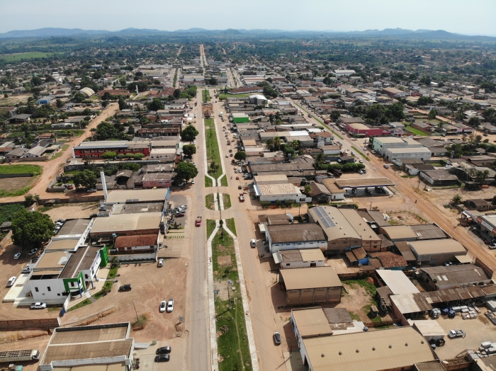

Colniza
Home
Curiosidades
Vídeo

Curiosidades de cidade
Sua população estimada em 2020 era de 39 861 habitantes.
Colniza foi elevada à categoria de cidade em 1998, com a criação do município.
Colniza possui um rebanho de 241.609 cabeças de bovinos, com base nas pesquisas realizadas pelo INDEA no ano de 2007.
Vídeo